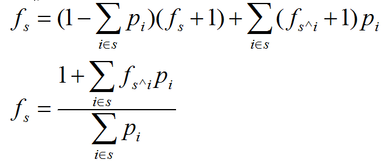

原文连接:https://www.cnblogs.com/I-Love-You-520/p/11617054.html
T1 连珠风暴
题目
【题目描述】
给定M种颜色的珠子，每种颜色珠子的个数均不限，将这些珠子做成长度为N的项链。
问能做成多少种不重复的项链。两条项链相同，当且仅当两条项链通过旋转或是翻转后能重合在一起，且对应珠子的颜色相同。
【输入格式】
一行两个整数分别表示M,N。
【输出格式】
一行一个整数表示答案。
【输入样例】
2 5【输出样例】
8 【数据规模】
对于30%的数据，n,m≤4；
对于60%的数据，n,m≤5；
对于100%的数据，nm≤32。
解析
nm≤32，可以直接暴力AC。
正解貌似是Polya定理。
Code


#include <algorithm> #include <iostream> #include <cstring> #include <string> #include <cstdio> #include <cmath> using namespace std; int m,n,ans; int gcd(int x,int y) { if(y==0) return x; return gcd(y,x%y); } int main() { //freopen("necklace.in","r",stdin); //freopen("necklace.out","w",stdout); cin>>m>>n; for(int i=1;i<=n;i++) ans+=pow(m,gcd(n,i)); if(n&1) ans+=n*pow(m,(n+1)/2); else ans+=(n/2)*pow(m,(n+2)/2)+(n/2)*pow(m,n/2); cout<<ans/(n*2); return 0; }
T2 种树
题目
【题目描述】
Fanvree很聪明，解决难题时他总会把问题简单化。例如，他就整天喜欢把图转化为树。但是他不会缩环，那他怎么转化呢？
这是一个有n个点m条双向边的图，Fanvree会选定一个节点，然后删掉这个节点和这个点连出去的边，如果变成了一棵树，那么这个节点便是可行的，什么是树呢？树也即无简单环的无向连通图。
告诉Fanvree可能的节点是什么。
【输入格式】
第一行两个正整数n,m，表示有n个点m条边。保证n≥2。
接下来m行，每行两个整数v,u，表示v和u之间有一条无向边1≤v,u≤n。保证没有重边和自环。
【输出格式】
第一行一个正整数 ns，表示这个图中有 ns 个结点可选。
接下来一行，共 ns 个整数，每个整数表示一个可选结点的编号。请按编号从小到大的顺序输出。
数据保证图中至少存在一个可选的结点。
【输入样例】
6 6
1 2
1 3
2 4
2 5
4 6
5 6【输出样例】
3
4 5 6【数据规模】
对于40%的数据，n,m≤1000；
另存在10%的数据，m=n-1；
另存在20%的数据，m=n；
对于100%的数据，n,m≤100000。
解析
可选的点必然不是割点。
选好点后，如果图是连通的，且剩余边数刚好为n-2，那么这个点就是可选的。
Code
#include <algorithm> #include <iostream> #include <cstring> #include <string> #include <cstdio> #include <cmath> #include <queue> using namespace std; const int N=100010; int n,m,head[N],ver[N<<1],Next[N<<1],tot,deg[N],ans,dfn[N],low[N],cnt,anss[N],cut[N]; void add(int x,int y) { ver[++tot]=y; Next[tot]=head[x],head[x]=tot; } void tarjan(int x) { int child=0; dfn[x]=++cnt,low[x]=cnt; for(int i=head[x];i;i=Next[i]) { int y=ver[i]; if(!dfn[y]) { tarjan(y); low[x]=min(low[x],low[y]); if(low[y]>=dfn[x]&&x!=1) cut[x]=1; if(x==1) child++; } low[x]=min(low[x],dfn[y]); } if(child>=2) cut[x]=1; } int main() { cin>>n>>m; for(int i=1;i<=m;i++) { int x,y; cin>>x>>y; add(x,y),add(y,x); deg[x]++,deg[y]++; } tarjan(1); for(int i=1;i<=n;i++) if(!cut[i]&°[i]==m-n+2) { ans++; anss[ans]=i; } if(ans==0) { cout<<-1; return 0; } cout<<ans<<endl; for(int i=1;i<=ans;i++) cout<<anss[i]<<" "; return 0; }
T3 序列
题目
【题目描述】
Fiugou想要在一个长度为N的序列A中找到不同位置的三个数，以这三个数为三边长来构成一个三角形。但是它希望在满足条件下，这三个数的位置尽量靠前。
具体地，设这三个数的为Ai,Aj,Ak(i<j<k)，Fiugou希望k尽量小；当k相等时，满足j尽量小；当k，j均相等时，满足i尽量小。
但是这个序列中的数可能会发生变化。所以Fiugou给出了M个操作，形式如下：
1 x y：将Ax改为y；
2：查询最优的合法解，从小到大给出这三个数(而不是位置)。
【输入格式】
第一行一个整数N，代表序列的长度。
第二行有N个整数，代表初始序列。
第三行一个整数M，代表操作的个数。
接下来M行操作，两种操作格式如上所述。
【输出格式】
共M行，每行三个数，从小到大给出。如果不存在，输出-1。
【输入样例】
6
7 1 3 4 5 1
3
2
1 3 5
2【输出样例】
3 5 7
4 5 7【数据规模】
对于10%的数据，N≤10，M≤5；
对于30%的数据，N≤100，M≤25；
对于50%的数据，N≤1000，M≤1000；
对于100%的数据，N≤100000，M≤1000，1≤Ai≤2×109，1≤x≤N，1≤y≤2×109。
解析
直接暴力模拟即可，注意三角形三边的关系判断与i,j,k的关系判断。
Code
#include <algorithm> #include <iostream> #include <cstring> #include <string> #include <cstdio> #include <cmath> using namespace std; inline long long read() { int num=0; char ch=getchar(); while(ch<'0'||ch>'9') ch=getchar(); while(ch>='0'&&ch<='9') { num=(num<<1)+(num<<3)+ch-'0'; ch=getchar(); } return num; } int n,m; long long a[100100]; int main() { n=read(); for(int i=1;i<=n;i++) a[i]=read(); m=read(); for(int t=1;t<=m;t++) { int r=read(); if(r==1) { int x=read(); long long y=read(); a[x]=y; } else { bool ok=false; for(int k=3;k<=n;k++) if(!ok) for(int j=2;j<k;j++) if(!ok) for(int i=1;i<j;i++) if(a[i]+a[j]>a[k]&&a[i]+a[k]>a[j]&&a[j]+a[k]>a[i]) { if(a[i]<a[j]) { if(a[i]<a[k]) { cout<<a[i]<<" "; if(a[j]<a[k]) cout<<a[j]<<" "<<a[k]<<endl; else cout<<a[k]<<" "<<a[j]<<endl; } else cout<<a[k]<<" "<<a[i]<<" "<<a[j]<<endl; } else { if(a[i]<a[k]) cout<<a[j]<<" "<<a[i]<<" "<<a[k]<<endl; else { if(a[j]<a[k]) cout<<a[j]<<" "<<a[k]<<" "; else cout<<a[k]<<" "<<a[j]<<" "; cout<<a[i]<<endl; } } ok=true; break; } if(!ok) cout<<"-1"<<endl; } } return 0; }
T4 礼物
题目
【题目描述】
夏川的生日就要到了。作为夏川形式上的男朋友，季堂打算给夏川买一些生日礼物。
商店里一共有N种礼物。夏川每得到一种礼物，就会获得相应喜悦值Wi（每种礼物的喜悦值不能重复获得）。
每次，店员会按照一定的概率Pi（或者不拿出礼物），将第i种礼物拿出来。
季堂每次都会将店员拿出来的礼物买下来。没有拿出来视为什么都没有买到，也算一次购买。
季堂希望最后夏川的喜悦值尽可能地高。
求夏川最后最大的喜悦值是多少，并求出使夏川得到这个喜悦值，季堂的期望购买次数。
【输入格式】
第一行，一个整数N，表示有N种礼物。
接下来N行，每行一个实数Pi和正整数Wi，表示第i种礼物被拿出来的概率和可以获得喜悦值。
【输出格式】
第一行，一个整数表示可以获得的最大喜悦值。
第二行，一个实数表示获得这个喜悦值的期望购买次数，保留3位小数。
【输入样例】
3
0.1 2
0.2 5
0.3 7【输出样例】
14
12.167【数据规模】
对于10%的数据，N=1；
对于30%的数据，N≤5；
对于100%的数据，N ≤ 20，0<Wi≤109，0<Pi≤1且ΣPi≤1。
解析
期望值是什么鬼？
N只有20，可以考虑用状压DP：
设fs表示已经购买的礼物集合为s时的期望购买次数，则转移方程为：

Code
#include <algorithm> #include <iostream> #include <cstring> #include <string> #include <cstdio> #include <cmath> using namespace std; const int N=(1<<20)+5; double p[N],f[N]; int n,w[N]; long long ans; int main() { cin>>n; for(int i=0;i<n;i++) cin>>p[i]>>w[i],ans+=w[i]; int temp=1<<n; for(int i=1;i<temp;i++) { double pp=0,ff=1; for(int j=0;j<n;j++) if(1<<j&i) ff+=f[1<<j^i]*p[j],pp+=p[j]; f[i]=ff/pp; } cout<<ans<<endl; printf("%.3f",f[temp-1]); return 0; }